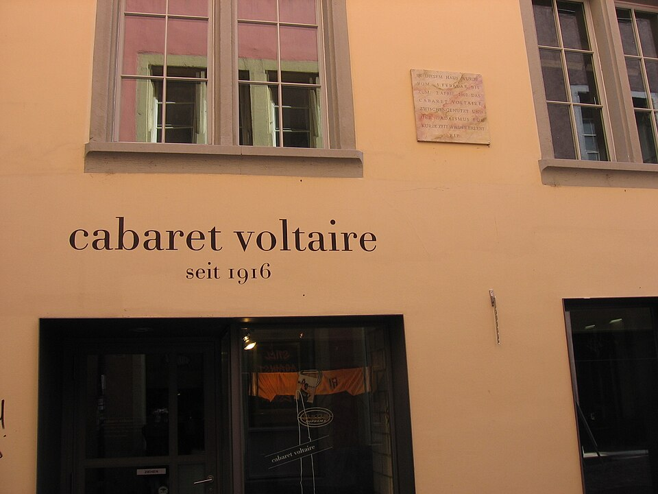
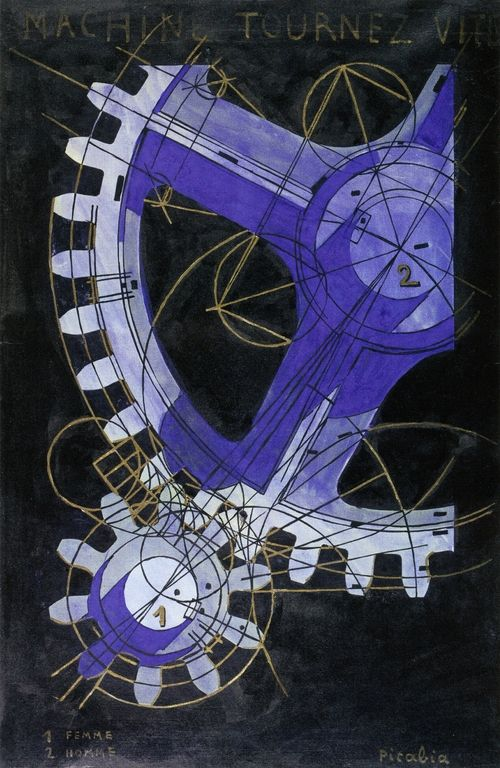
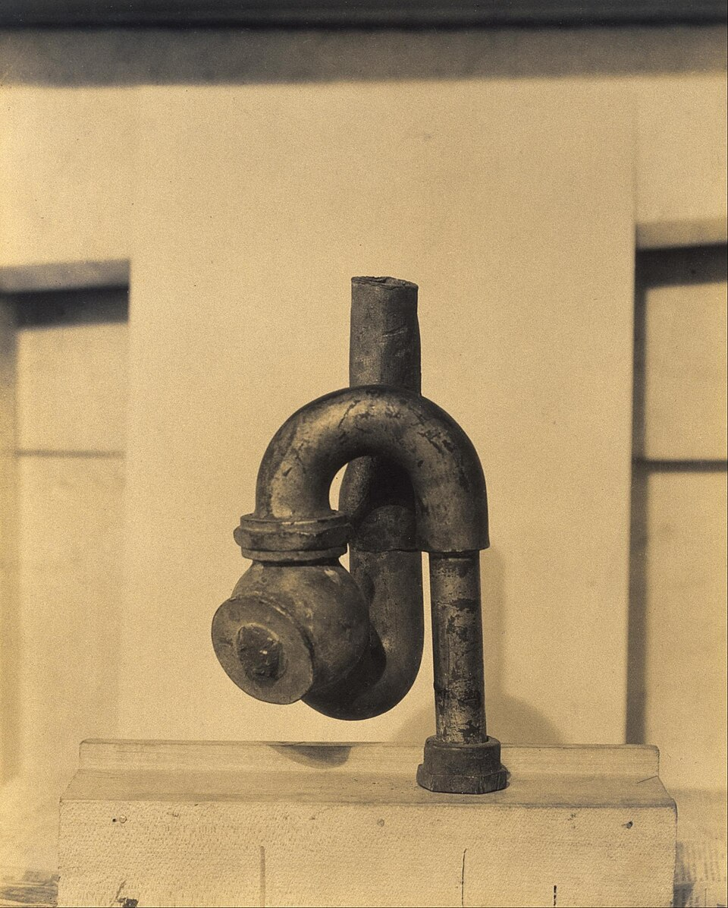
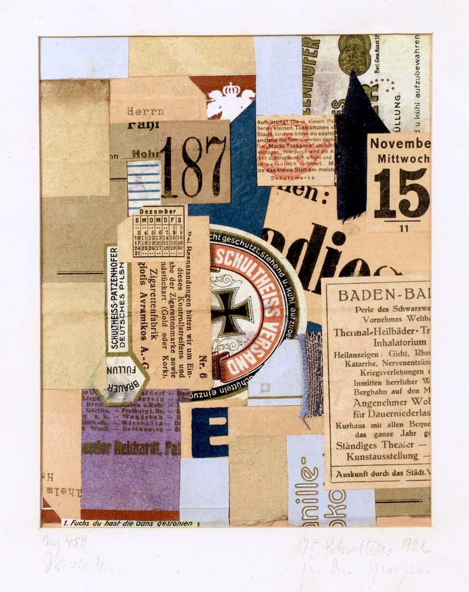
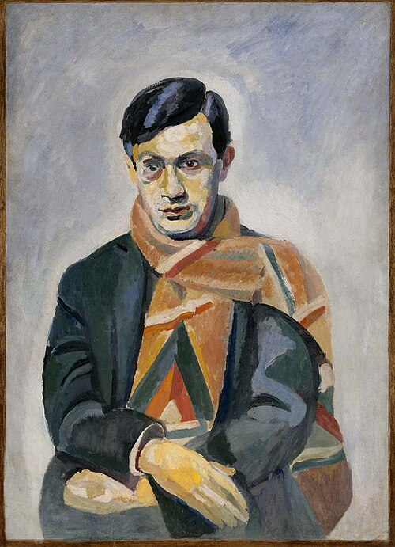
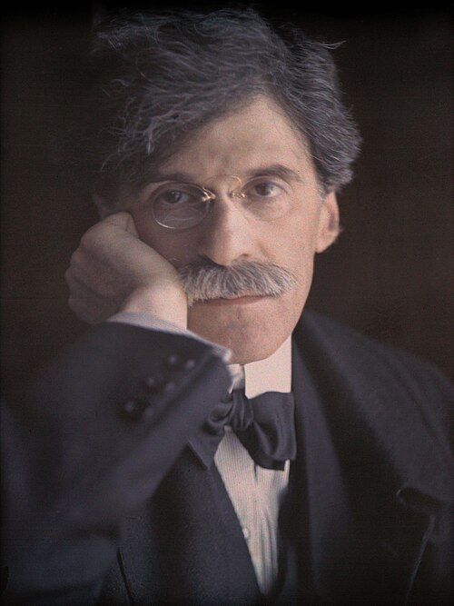

図解：ダダ
ダダの成立と広がり
- 1915〜16

バルとツァラ戦火を逃れスイスへ
反戦の交流の場 - 1916〜18意味を壊す詩音響詩と偶然の美術
「ダダ宣言1918」 - 1915頃〜


ニューヨークデュシャンら3人
既製品・無用な機械 - 1917
 《泉》の展示拒否芸術とは何かを問う
《泉》の展示拒否芸術とは何かを問う - 1918頃〜

ドイツ各地へ政治的な写真合成
廃棄物のメルツ
従来の芸術と何が違うか
小便器に署名した《泉》構図意図して組み立てる偶然の法則に任せる
アルプのちぎった厚紙詩の言葉意味・文章のまとまり音や文字の見え方
音響詩《カラヴァーネ》作者名声のある作者の作名声を切り離す
無名のR. Muttとして出品
図版の出典
- 《キャバレー・ヴォルテール外観（2006年撮影）》建物の作者不詳／写真：Absinthe：出典（Public domain（撮影者AbsintheによるPD-self））
- 《カラヴァーネ（印刷された音響詩、再録版の複製）》フーゴ・バル：出典（Public domain（作者1927年没、PD-Art・PDM表示、1920年刊行））
- 《機械よ、早く回れ》フランシス・ピカビア：出典（Public domain（作者1953年没、PD-Art・PD-old-70-expired・PDM））
- 《《神》を撮影した写真》モートン・リヴィングストン・シャンバーグ（写真）。立体はエルザ・フォン・フライターク＝ローリングホーフェンとシャンバーグへの帰属表記あり：出典（Public domain（1917年の写真、撮影者1918年没、PD-Art・米国公開期限経過））
- 《泉（1917年原作の写真、『ザ・ブラインド・マン』第2号掲載）》マルセル・デュシャン（作品）、アルフレッド・スティーグリッツ（写真）：出典（CC0 1.0（Metropolitan Museum of Art提供の掲載誌デジタル複製））
- 《メルツ458・ヴリート》クルト・シュヴィッタース：出典（Public domain（PD-Art、PD-old-75-expired、PDM））
重要人物
チューリヒのダダ
- フーゴ・バル詩人反戦詩人。キャバレー・ヴォルテールを開く

トリスタン・ツァラ詩人意味を壊す詩。「ダダ宣言1918」ですべての破壊を求める- ジャン・アルプ美術家切り離した厚紙を偶然に従って配置
ニューヨークのダダ
- マルセル・デュシャン美術家レディメイド《泉》で芸術そのものを問う。後にチェスへ
- フランシス・ピカビア画家役に立たない機械を描く。ツァラに接しダダを自覚
- マン・レイ美術家アイロンに鋲を付けた《贈り物》を制作
- モートン・シャンバーグ美術家木箱に排水管を付けた《神》を制作

アルフレッド・スティーグリッツ写真家291ギャラリーを開く。アメリカの前衛の出発点
ドイツのダダ
- リヒャルト・ヒュルゼンベック詩人チューリヒのキャバレーに通い、ベルリン・ダダを起こす
- ラウル・ハウスマン美術家ベルリン・ダダの美術の中心。フォトモンタージュ
- ハンナ・ヘーヒ美術家フォトモンタージュで政治や女性の地位向上を訴える
- クルト・シュヴィッタース美術家ハノーファーで一人、廃棄物の作品「メルツ」
- マックス・エルンスト画家ケルンでコラージュを絵画へ応用。《セレベスの象》
ダダを受け継いだ人
反芸術と戦争への反発
反芸術と既製品・偶然
動画 1:49～ダダ、またはダダイズムは、20世紀初頭に世界各地で展開した芸術運動です。それまでのすべてに反発し、芸術の領域を際限なく広げる現代美術の先駆けとなりました。以前の様式への反発にとどまらず、芸術という区分自体を問い直したため、反芸術とも呼ばれます。
代表例がマルセル・デュシャンの《泉》です。大量生産された男性用小便器に、架空の人物の名「R. Mutt」を署名したレディメイドでした。手間をかけて作る唯一の品こそ芸術だという価値観に反発しています。芸術とデザインを結び付けたアール・ヌーヴォーにも手仕事を重んじる面がありましたが、ダダは、従来は芸術と認められなかった既製品をその領域へ持ち込みました。
画像を拡大 ＋
《泉（1917年原作の写真、『ザ・ブラインド・マン』第2号掲載）》
- 作者
- マルセル・デュシャン（作品）、アルフレッド・スティーグリッツ（写真）
- 制作時期
- 1917年
- 所在地・所蔵
- 原作は現存せず。掲載誌所蔵：メトロポリタン美術館図書館（100.51 B61 no.2）
- 素材・形式
- レディメイド作品を撮影した写真の雑誌掲載図版
- 原題
- Fountain
- 別名
- Fountain by R. Mutt
出典・画像について
1917年の原作を撮影した歴史写真。後年のレプリカ写真ではない。掲載はThe Blind Man第2号4頁の誌面スキャン。動画の写真切抜きとは表示範囲が異なる。
画像出典：アルフレッド・スティーグリッツ（写真）／マルセル・デュシャン（作品）／Metropolitan Museum of Art Libraries（掲載誌デジタル複製、CC0）
CC0 1.0（Metropolitan Museum of Art提供の掲載誌デジタル複製）
作品情報：作品・画像・利用条件 · 所蔵館の作品ページ
写真を切って挑発的に組み合わせるフォトモンタージュ、理髪練習用の頭部人形に鉛筆や定規などを取り付けるアッサンブラージュも、その例です。ジャン・アルプは、ちぎった厚紙を偶然に従って並べた作品を制作しました。構図は意図を持って組み立てるべきだという考えに対し、偶然の法則へ任せたのです。従来の芸術の概念を壊す手法が次々に現れました。同時に、こうした方法を認めれば何でも芸術になるのではないか、という疑問も生まれます。
原作者1978没の自由画像条件未確保。公開閲覧を自由転載としない。
《美しい少女》
- 作者
- ハンナ・ヘーヒ
- 制作時期
- 1920年頃
- 所在地・所蔵
- 個人蔵（2024年クリスティーズ出品記録。現所蔵先未確認）
- 素材・形式
- 紙のフォトモンタージュ、作者の台紙に貼付
- 原題
- Das schöne Mädchen
- 別名
- The Beautiful Girl
- 動画の年代
- 1919～1920年
出典・画像について
動画の年代 1919～1920年 と確認済み掲載年代 1920年頃 を分けて記録。
作品情報：作品・画像・利用条件
Commons YouTube画面キャプチャの第三者CC0と公式ADAGPが整合せず保留。
《機械的頭部（われわれの時代の精神）》
- 作者
- ラウル・ハウスマン
- 制作時期
- 1919年頃（制作年代には留保あり）
- 所在地・所蔵
- ポンピドゥー・センター／国立近代美術館、パリ（AM1974-6）
- 素材・形式
- 木製理髪用頭部人形、金属カップ・革ケース・定規・時計部品などのアッサンブラージュ
- 原題
- Mechanischer Kopf
- 別名
- Der Geist unserer Zeit／Tête mécanique／L’esprit de notre temps
- 動画の年代
- 1919年
出典・画像について
動画の年代 1919年 と確認済み掲載年代 1919年頃（制作年代には留保あり） を分けて記録。
作品情報：作品・画像・利用条件 · 所蔵館の作品ページ
戦争への疑いと「ダダ」という名
動画 3:41～ダダの契機は第一次世界大戦でした。戦火を逃れた若い芸術家は惨禍を嫌悪し、その原因を人間の理性、合理的・合目的的な価値観に求めました。社会を映す芸術は、統合と反発を繰り返してよりよいものを築くと信じられていました。しかし、進歩の先に現れたのは戦争です。ダダイストは、戦争へ至った根源の価値観をすべて破壊し、無意味で脈絡のないものに新しい原点を求めました。
名前の起源は明確ではありません。トリスタン・ツァラが辞書から偶然見つけたという説があります。ルーマニア語では「そうだ、そうだ」、フランス語では小さな木馬を意味するなど、各国にありそうな音が選ばれ、特定の意味はないという見方が有力とされます。ドイツの詩人リヒャルト・ヒュルゼンベックも、ダダとは何かと定義を求めること自体が、ダダらしくないと述べました。
チューリヒ――言葉・音・偶然
スイスとキャバレー・ヴォルテール
動画 5:18～第一次世界大戦は1914年から1918年まで、4年3か月にわたり続きました。フランス・イギリスを中心とする連合国と、ドイツ・オーストリアを中心とする同盟国が争い、世界規模の影響と甚大な戦死者を生みます。毒ガスや戦車など最新技術も投入され、技術の進歩が惨禍へつながりました。避難先の一つが、1815年に中立国として認められたスイスでした。
1915年、ドイツの詩人フーゴ・バルと、ルーマニアの詩人トリスタン・ツァラがチューリヒへ来ました。象徴主義や未来派と同じく、詩人が運動の出発点を担いました。反戦詩人として知られたバルは、歌手でパートナーのエミー・ヘニングスと避難していました。バルらは国際的な交流の場としてキャバレー・ヴォルテールを開きます。ドイツと敵対するフランスの思想家ヴォルテールを店名にしたことにも、反戦の意思がうかがえます。出身国を問わず芸術家を招き、詩や作品を発表し、議論を交わしました。

《キャバレー・ヴォルテール外観（2006年撮影）》
- 作者
- 建物の作者不詳／写真：Absinthe
- 制作時期
- 2006年4月撮影（施設創設は1916年）
- 所在地・所蔵
- キャバレー・ヴォルテール、チューリヒ、スイス
- 素材・形式
- カラー写真
- 原題
- Cabaret Voltaire, Zürich
出典・画像について
現在の施設外観。創設時の写真ではない。動画と別角度から撮影した同施設の写真。
画像出典：myself
Public domain（撮影者AbsintheによるPD-self）
作品情報：作品・画像・利用条件
ツァラと意味を壊す詩
動画 6:41～バルより少し遅れてチューリヒへ来たツァラは、まだ20歳に満たない学生でした。父が徴兵猶予を受けさせるため勧めたといわれ、結局は徴兵を免れましたが、戦争から目を背けていたわけではありません。渡航前の詩《戦争の歌》には、案山子の立つ畑、大砲の跡、国境へ急ぐ人々、祈りの喪失、手榴弾や死体の光景が続きます。森の悲しみ、内なる沼、その底に聞こえる声と涙、生きている者への痛みも重なります。後にダダによって作風が大きく変わっても、バルと同じく根底には反戦がありました。
二人を中心とするダダの詩は、初めて読むと理解しにくいものでした。紹介されたツァラの詩では、意味のつながらない光景、挨拶、音の連なり、身体や魂の描写、途中へ割り込む声や叫びが並びます。言語や単語をばらばらにし、ランダムに組み合わせたような無意味の詩を目指したのです。
言葉は人々の差を表すものでもあります。一つの言語で称賛になる言葉が、別の言語では他者をけなすものかもしれません。翻訳でもニュアンスは正確には伝わりません。そうしたずれが相互理解を妨げ、嫌悪や争いを生むのかもしれません。それなら言葉の体系を壊してしまおうという発想です。多くの国の人が集まった場だったことも、この考えに関係していたのかもしれません。
音響詩と偶然の美術
動画 9:19～ダダの詩から発展したのが音響詩、サウンド・ポエトリーです。意味の分からない言葉でも、音だけに注目すれば違和感なく聴ける場合があります。朗読の実演では、こうした音の連なりを耳で確かめることができます。バルの《カラヴァーネ》は無意味な語で構成され、印刷された文字のフォントも文ごとに変わっています。言葉の意味や文章のまとまりをほどき、音や文字の見え方へ注意を向ける試みでした。
動画ラベルだけで1916本人の記録とせず、演者・制作年・権利未確定。別静止写真代用しない。
《《カラヴァーネ》の朗読を示す映像（制作年・演者未確定）》
- 作者
- 原詩：フーゴ・バル／動画の演者・映像制作者は未確定
- 制作時期
- 1916年（原実演）、映像制作年不明
- 所在地・所蔵
- 原実演：キャバレー・ヴォルテール、チューリヒ／動画映像の所蔵先未確定
- 素材・形式
- 朗読パフォーマンスの映像
- 原題
- Karawane
- 動画の年代
- 1916年
出典・画像について
動画の年代 1916年 と確認済み掲載年代 1916年（原実演）、映像制作年不明 を分けて記録。
作品情報：作品・画像・利用条件

《カラヴァーネ（印刷された音響詩、再録版の複製）》
- 作者
- フーゴ・バル
- 制作時期
- 1916年作品、選定画像の出典は1920年刊行本
- 所在地・所蔵
- 再録出典：Dada Almanach、Erich Reiss Verlag、ベルリン、1920年、53頁（スキャン元の所蔵個体は未記載）
- 素材・形式
- 活字による音響詩の印刷ページ（デジタル複製）
- 原題
- Karawane
- 動画の年代
- 1916年
出典・画像について
動画の年代 1916年 と確認済み掲載年代 1916年作品、選定画像の出典は1920年刊行本 を分けて記録。
画像出典：User Albrecht Conz on de.wikipedia
Public domain（作者1927年没、PD-Art・PDM表示、1920年刊行）
作品情報：作品・画像・利用条件
美術におけるチューリヒのダダは、文学での試みを踏襲しました。代表的なのが、ドイツに生まれ後にフランスへ帰化したジャン・アルプです。《偶然の法則によって配置された矩形》では、切り離した厚紙をランダムに散らし、貼り合わせています。ツァラらが詩で試みた、意味や構成を意図的にまとめない方法を、美術で行おうとしました。
公式ARS/VG Bild-Kunst。自由条件未確認、別の偶然コラージュを代用しない。
《無題（偶然の法則に従って配置された正方形）》
- 作者
- ジャン（ハンス）・アルプ
- 制作時期
- 1917年
- 所在地・所蔵
- ニューヨーク近代美術館（496.1970）
- 素材・形式
- 切り貼りした色紙・色紙
- 原題
- Untitled (Squares Arranged According to the Laws of Chance)
- 別名
- 偶然の法則によって配置された矩形
出典・画像について
作品情報：作品・画像・利用条件 · 所蔵館の作品ページ
チューリヒの分裂とパリへの移動
動画 11:12～バルとツァラを中心とする活動は、約一年で方向性の違いが表面化しました。契機は1916年のバルの「ダダ宣言」です。ツァラは宣言する行為そのものに反対だったようです。後の「ダダ宣言1918」では、宣言を書きながら宣言にも原則にも反対し、ダダは何も意味しないという、自己否定を含む立場を示します。バルが既成の価値観に反発して自由な表現を求めたのに対し、ツァラは既存のすべての破壊を求めたのでした。
バルは運動の無意味さに失望して離れ、キャバレー・ヴォルテールも閉じられました。1920年にカトリックへ改宗し、慎ましい生活へ移ったとされます。一方のツァラは雑誌『ダダ』で活動を続けました。大戦終結後の1918年12月、「ダダ宣言1918」を掲載した『ダダ3』が各地へ渡ります。フランスの詩人アンドレ・ブルトンはこれに感銘を受けてツァラをパリへ招き、シュルレアリスムへつながっていきました。
公式ProLitteris。1918刊行だけで表紙の自由転載と判断しない。
《雑誌『ダダ』第3号（通常版表紙）》
- 作者
- トリスタン・ツァラ（編集）、マルセル・ヤンコ（表紙木版）
- 制作時期
- 1918年12月
- 所在地・所蔵
- 所蔵例：チューリヒ美術館図書館（DADA III:33:3）。動画の刊本個体は未確定
- 素材・形式
- 印刷雑誌、表紙に木版
- 原題
- Dada 3
- 動画の年代
- 1918年
出典・画像について
動画の年代 1918年 と確認済み掲載年代 1918年12月 を分けて記録。
作品情報：作品・画像・利用条件 · 所蔵館の作品ページ
ニューヨーク――観客の思考
ニューヨークで並行した運動
動画 13:01～開戦時に中立を宣言したアメリカも、戦火を逃れる人々の行き先でした。美術の動きが比較的少ないチューリヒに対し、ニューヨークでは、アメリカのマン・レイ、フランスのデュシャンとフランシス・ピカビアが中心となります。後二者はフランスでキュビストとして活動しましたが、大戦でキュビスムが停滞すると、新しい芸術をニューヨークに求めました。
ニューヨークの特徴は、チューリヒの理念が伝わる前から、同時並行、あるいは先んじて似た活動があった点です。1919年、チューリヒを訪れたピカビアがツァラと『ダダ3』に接し、自分たちの仕事もダダだと認識しました。1921年にはマン・レイとデュシャンがツァラの許可を得て雑誌『ニューヨーク・ダダ』を発行します。しかし活動の開始は、その刊行時ではなく、彼らが集まった1915年頃とされます。厳密な定義を立てること自体がダダらしくなく、既存の価値観への反発と無意味さが共通していたのです。
291ギャラリーとアーモリー・ショー
動画 14:31～写真家アルフレッド・スティーグリッツは、ニューヨーク五番街291番地に291ギャラリーを開きました。写真展から始まり、次第に前衛芸術を展示する、アメリカの前衛の出発点となります。1913年には、デュシャンの《階段を降りる裸体 No.2》がアーモリー・ショーで大きな反響を呼びました。パリのアンデパンダン展では、これを裸体とする題名が批判されたのに対し、アメリカではその名付けが面白がられたと説明されます。
036権利保留を継承。公式教育資料は1912パリで展示前に撤回を求められたと説明、親が短注。
《階段を降りる裸体 No.2》
- 作者
- マルセル・デュシャン
- 制作時期
- 1912年
- 所在地・所蔵
- フィラデルフィア美術館（1950-134-59）
- 素材・形式
- 油彩・カンヴァス
- 原題
- Nu descendant un escalier n° 2
- 別名
- Nude Descending a Staircase (No. 2)
出典・画像について
作品情報：作品・画像・利用条件 · 所蔵館の作品ページ
パリでの展示経緯について
原解説はパリでの展示が批判されたと説明しますが、フィラデルフィア美術館の教育資料は、1912年のアンデパンダン展では展示前に撤回を求められたとしています。題名と主題が問題視された点と、翌年のアメリカでの反響という本文の比較は残しています。
確認資料：フィラデルフィア美術館：Duchamp’s Fountain and the Role of Information
パリの画壇には裸体表現の蓄積があり、その題名が批判の対象になりました。無題なら、それほど騒がれなかったかもしれません。一方、アメリカの観客は、古いゴルフクラブやバッグ、壊れたヴァイオリンの山など、自分には何に見えるかを語り合いました。その話題が反響を広げました。デュシャンが生み出したかったのも、作品を介して鑑賞者の思考を刺激する現象です。芸術家と鑑賞者が一緒に作るものという価値の転換は、現代へもつながっています。
反響を受けて招かれたデュシャンは、先に来ていたピカビア、マン・レイと活動します。ダダを名乗る雑誌は1921年ですが、活動は1915年刊行の『291』からあったと考えられます。この雑誌名は291ギャラリーに由来します。先にスティーグリッツと親交を結んでいたピカビアを通じ、デュシャンも迎えられました。
レディメイドが問いかけるもの
用途から切り離された物
動画 16:42～デュシャンは、既製品にわずかに手を加えるレディメイドを展開します。パリ時代の最初の例とされる《自転車の車輪》は、逆さにした車輪を椅子へ取り付けたものです。車輪は自転車を走らせ、椅子は人が座るためにあります。しかし本来の用途を外して組み合わせると、それは何なのかという問いが生じます。意味のない作品を作る点でも、ダダ的でした。
写真CC条件だけで原作と同個体を判断せず保留。別レプリカで代用しない。
《自転車の車輪（動画の複製個体は未確定）》
- 作者
- マルセル・デュシャン
- 制作時期
- 1913年原案、動画の現存個体の制作年は不明
- 所在地・所蔵
- 動画の複製個体未確定。比較資料：MoMAの1951年第3版（595.1967.a-b）
- 素材・形式
- 金属製車輪・塗装木製スツール
- 原題
- Bicycle Wheel
- 別名
- Roue de bicyclette
- 動画の年代
- 1913年
出典・画像について
1913年原案と現存する再制作個体を区別。動画の個体は未確定で画像を保留。
作品情報：作品・画像・利用条件 · 所蔵館の作品ページ
同じ場で活動したアメリカのモートン・シャンバーグも、1917年に《神》を制作したと紹介されます。木箱に排水管を取り付けたレディメイドで、題名と物との関係も難解です。こうした既製品の作品は、《泉》以前から作られていました。

《《神》を撮影した写真》
- 作者
- モートン・リヴィングストン・シャンバーグ（写真）。立体はエルザ・フォン・フライターク＝ローリングホーフェンとシャンバーグへの帰属表記あり
- 制作時期
- 1917年
- 所在地・所蔵
- 写真：ヒューストン美術館。立体《神》：フィラデルフィア美術館
- 素材・形式
- ゼラチン・シルバー・プリント（立体作品を撮影）
- 原題
- "God" By Baroness Elsa von Freytag-Loringhoven and Morton Schamberg
- 別名
- God
出典・画像について
掲載図は立体を撮影した1917年の写真。写真はヒューストン美術館、立体はフィラデルフィア美術館に所蔵。立体の現行公式作者欄とCommonsの両名帰属表記には違いがある。
画像出典：モートン・リヴィングストン・シャンバーグ（写真）／ヒューストン美術館・Google Art Project（画像提供）
Public domain（1917年の写真、撮影者1918年没、PD-Art・米国公開期限経過）
作品情報：作品・画像・利用条件 · 立体《神》の現行所蔵館記録
《泉》と展示拒否
動画 17:34～《泉》が特別に語られるのは、その展示を巡る騒動によります。逆さにした男性用小便器へ「R. Mutt」と署名し、1917年の第1回ニューヨーク・アンデパンダン展へ応募しました。パリの無審査展を模した展覧会です。6ドルの出品料、作品名、フィラデルフィアの偽の住所、偽名を添えて郵送したとされます。名前は漫画『マットとジェフ』の登場人物に由来する説と、間抜けを意味する語から取ったという説が紹介されます。
作品を見た理事たちは、僅差の議決で展示を拒みました。無審査のはずなのに選別したという矛盾も生じます。独立美術家協会は1917年4月11日、役立つ品ではあっても美術展に置くべきものではなく、芸術品とは認められない、という趣旨の声明を出しました。すると、そもそも芸術とは何かという議論が起きました。
デュシャン自身が協会の理事でありながら出品し、拒否後もしばらくは無名のR. Muttの作と受け止められた点が重要です。実名で出品して展示拒否に抗議したのなら、ここまで騒がれなかっただろうと考えられます。有名なデュシャンが芸術だと主張したから受け入れる、という作者の名声さえ切り離し、芸術そのものを問いに付しました。鑑賞者に考えさせることも芸術に含める立場でした。1968年、晩年のBBCのインタビューでも、芸術家として内部から芸術の信用を揺さぶろうとした趣旨を語っています。
デュシャンとピカビアのその後
動画 20:16～デュシャンは30代になるとチェス・プレイヤーへ転じ、芸術家として失敗したわけではないのに、自ら表舞台を退きました。すべての芸術家がチェスを指すとは限らないが、チェスを指す人は芸術家だという趣旨の言葉も残しています。思考を刺激する行為まで芸術とする、デュシャンらしい考え方です。
ピカビアは機械を主題にした作品を描きましたが、それは実際には役に立たない機械でした。無用な機械に美を見いだす点がダダ的です。マン・レイもレディメイドを制作しました。《贈り物》では、アイロンの底へ14本の鋲を取り付け、通常のアイロンとして使えなくしています。物の機能から切り離したところに、既製品と芸術作品の違いを示しました。やがてデュシャンはチェスへ、マン・レイとピカビアはパリへ移り、シュルレアリスムへ合流します。

《機械よ、早く回れ》
- 作者
- フランシス・ピカビア
- 制作時期
- 1916／1918年
- 所在地・所蔵
- ナショナル・ギャラリー・オブ・アート、ワシントン（1989.10.1）
- 素材・形式
- 19世紀フランスのリトグラフ図版に筆・インク・水彩・金泥、カンヴァス裏打ち
- 原題
- Machine tournez vite
- 別名
- Machine Turn Quickly／早く回る機械
- 動画の年代
- 1916～1918年
出典・画像について
動画の年代 1916～1918年 と確認済み掲載年代 1916／1918年 を分けて記録。
画像出典：Francis Picabia
Public domain（作者1953年没、PD-Art・PD-old-70-expired・PDM）
作品情報：作品・画像・利用条件 · 所蔵館の作品ページ
写真CC0だけで原作条件を確定せず、英国FOP依存表示と米国限定PDのみでは採用しない。
《贈り物（動画の再制作個体は未確定）》
- 作者
- マン・レイ
- 制作時期
- 1921年原案、動画の個体の制作年は未確定
- 所在地・所蔵
- 動画の個体未確定。同題1972年再制作はテート（T07883）
- 素材・形式
- アイロン・鋲
- 原題
- Cadeau
- 別名
- Gift
- 動画の年代
- 1921年
出典・画像について
動画の年代 1921年 と確認済み掲載年代 1921年原案、動画の個体の制作年は未確定 を分けて記録。
作品情報：作品・画像・利用条件 · 所蔵館の作品ページ
ドイツ各都市の展開
ベルリン・ダダとヘーヒ
動画 21:21～1918年頃、敗戦国ドイツのベルリンでも運動が広がりました。発起人リヒャルト・ヒュルゼンベックは、チューリヒのキャバレーへ通っていたドイツの詩人です。美術の中心となったラウル・ハウスマンと、その恋人ハンナ・ヘーヒは、写真を切り離して別の物へ組み合わせるフォトモンタージュを用いました。単なる無意味さだけでなく、政治的な主張を込めた点が特徴です。展示に憤慨するドイツ国防軍を皮肉る、挑発的な作品も制作しました。
Commons2025投稿の作者PD放棄の根拠不詳、1971没と所蔵館権利に矛盾疑い。公式403、無条件採用しない。
《美術評論家》
- 作者
- ラウル・ハウスマン
- 制作時期
- 1919～1920年
- 所在地・所蔵
- テート（T01918）
- 素材・形式
- インク・クレヨン・印刷物などのコラージュ
- 原題
- Der Kunstreporter
- 別名
- The Art Critic
- 動画の年代
- 1920年
出典・画像について
動画の年代 1920年 と確認済み掲載年代 1919～1920年 を分けて記録。
作品情報：作品・画像・利用条件 · 所蔵館の作品ページ
公式ADAGP/GrandPalaisRmn、自由条件未確保。
《ABCD》
- 作者
- ラウル・ハウスマン
- 制作時期
- 1923～1924年
- 所在地・所蔵
- ポンピドゥー・センター／国立近代美術館、パリ（AM1974-9）
- 素材・形式
- 墨・雑誌図版の切り抜き貼付／紙
- 原題
- ABCD
出典・画像について
作品情報：作品・画像・利用条件 · 所蔵館の作品ページ
ヘーヒはフォトモンタージュで政治的なメッセージに加え、女性の地位向上も訴えました。写真を組み合わせると、不思議な姿でありながら、社会に向けた意味のある作品が生まれます。
ハノーファーとケルンのダダ
動画 22:36～クルト・シュヴィッタースはハノーファーで一人で活動しました。写真の組合せとは異なり、廃棄物を集めて作品にする「メルツ」を展開します。偶然見かけた「コメルツ」という語の一部を取って名付けたとされます。チューリヒの無意味さや偶然性に近い面もあったといえそうです。

《メルツ458・ヴリート》
- 作者
- クルト・シュヴィッタース
- 制作時期
- 1922年
- 所在地・所蔵
- 個人蔵（Commons記載）
- 素材・形式
- コラージュ
- 原題
- Merz 458 Wriedt
- 別名
- メルツ458
出典・画像について
ケルンでは、後にシュルレアリストとなるマックス・エルンストが、コラージュを絵画へ応用した作品を展開しました。《セレベスの象》は、さまざまな機械を組み合わせたような形が象に見え、それを絵画にしたものです。後のシュルレアリスムへ影響しました。ドイツの各都市の前衛活動は、ナチスの台頭によって停滞します。短い期間でも、その試みは現代へつながりました。
公式403。1976没原作と画像自由許諾未確認、素材推測しない。
《セレベスの象》
- 作者
- マックス・エルンスト
- 制作時期
- 1921年
- 所在地・所蔵
- テート（T01988）
- 素材・形式
- 原題
- Celebes
- 別名
- The Elephant Celebes
出典・画像について
作品情報：作品・画像・利用条件 · 所蔵館の作品ページ
音楽・日本、現代へ
音楽と日本への広がり
動画 23:28～ダダは美術だけでなく、文学や音楽なども巻き込んだ運動です。後の音楽家ジョン・ケージの《4分33秒》も、そのような価値の転換を考える例になります。演奏者が何も弾かない間に、意図せず生じる周囲の音の偶然性へ注意を向ける作品です。単に無音を作るのではなく、聴く対象を変えたのでした。
日本では高橋新吉や中原中也らが影響を受けました。高橋の皿を題材にした詩は、皿洗いの仕事で感じた心境を表し、縦書きで皿の字が積み上がる見た目に、単調さや倦怠を重ねています。言葉の通常の意味だけでなく、配置や反復にも表現を見いだす、ユーモラスな例です。
題名は同定、動画版面は一部再配置と考えられ原版個体未定。1987没作者詩の自由条件未確保、全文や版面を追加転載せず本文説明保持。
《皿》
- 作者
- 高橋新吉
- 制作時期
- 1923年の詩集に収録
- 所在地・所蔵
- 『ダダイスト新吉の詩』所収。動画の表示版面・所蔵個体は未確定
- 素材・形式
- 詩・活字組版（動画は一部の再配置表示）
- 原題
- 皿
出典・画像について
作品情報：作品・画像・利用条件
反芸術が芸術を広げる
動画 24:30～現代美術の分かりにくさにつながる出発点の一つは、ダダにあります。ただし元は、第一次世界大戦への嫌悪と既存の価値観への反発でした。芸術に反して生まれたものが芸術へ取り込まれ、結果としてその概念を広げました。エルンスト・ゴンブリッチも『美術の物語』の序文で、抽象的な美術という存在より、実際に作る人々に目を向ける考えを述べています。
要点まとめ
- ダダは、第一次世界大戦への嫌悪を背景に、従来の芸術や合理的な価値観そのものへ反発した。
- レディメイド、フォトモンタージュ、アッサンブラージュや偶然の利用は、芸術の境界を問い直した。
- チューリヒのキャバレー・ヴォルテールでは国を越えて芸術家が集い、言葉の意味をほどく詩や音響詩を試みた。
- バルが自由な表現を求めたのに対し、ツァラは宣言や原則そのものも否定した。活動は雑誌を通じてパリへ伝わった。
- ニューヨークでは、チューリヒの理念が届く前からデュシャン、マン・レイ、ピカビアが似た試みを進めていた。
- 《泉》の展示拒否は芸術とは何かという議論を広げた。作者の名声や制作の手間から離れ、鑑賞者の思考を作品へ含める転換だった。
- ベルリンのダダは政治的・社会的な主張を持ち、シュヴィッタースのメルツやエルンストの絵画にも独自の展開があった。
- ダダ的な価値の転換は音楽や日本の詩にも見られる。反芸術として生まれた試みが、芸術の概念そのものを広げた。
確認問題
答えを考えてから開いてください。選択問題は選ぶとすぐ正誤と解説が出ます（選択肢の順番は開くたびに変わります）。各問題のリンクから該当の章や作品カードへ戻れます。
選択問題：0／4問回答・正解0
A. 一問一答答えを考えてから開く
問1ダダが従来の合理的な価値観へ強く反発する契機となった戦争は何か。
答えを見る
問2大量生産された既製品を作品にする試みを何というか。
答えを見る
問3サウンド・ポエトリーでは、言葉の何よりも何に注目するか。
答えを見る
B. 4択選ぶとすぐ正誤と解説
問4キャバレー・ヴォルテールが活動の場となった都市はどこか。
→ 本文で確認（スイスとキャバレー・ヴォルテール）
問5《泉》が展示拒否された展覧会について、本文が指摘する矛盾はどれか。
→ 本文で確認（《泉》と展示拒否）
問6ハノーファーで廃棄物を作品にするメルツを展開した人物は誰か。
→ 本文で確認（ハノーファーとケルンのダダ）
C. 図版問題画像を見て答える
問7この写真に写る作品を出品した芸術家は誰か。
→ 作品カードで確認
問8この作品の作者と、本文で紹介する活動名を答えよ。